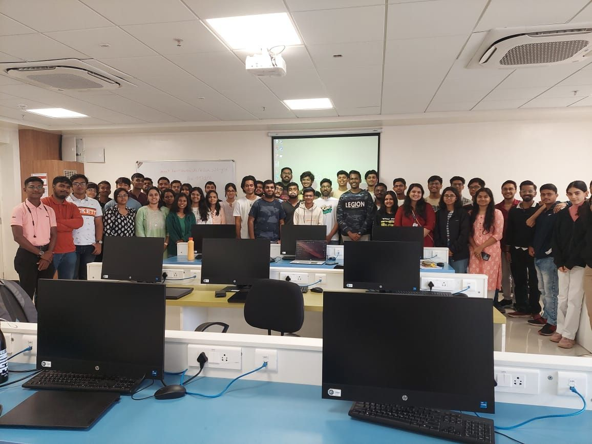
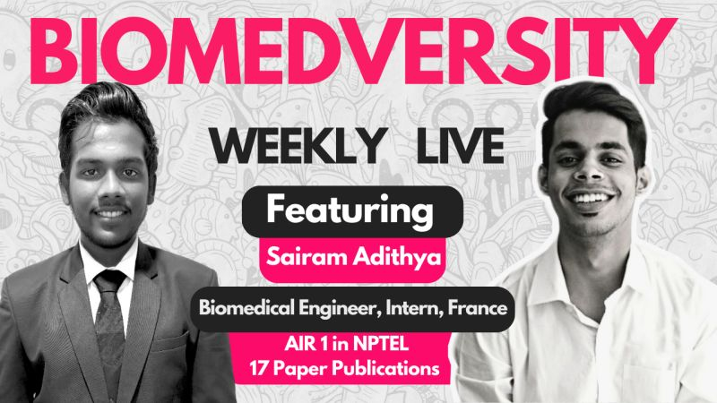
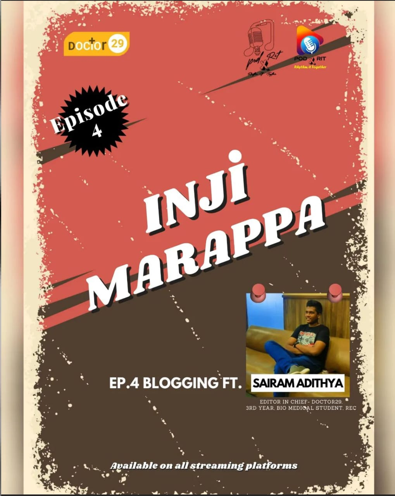
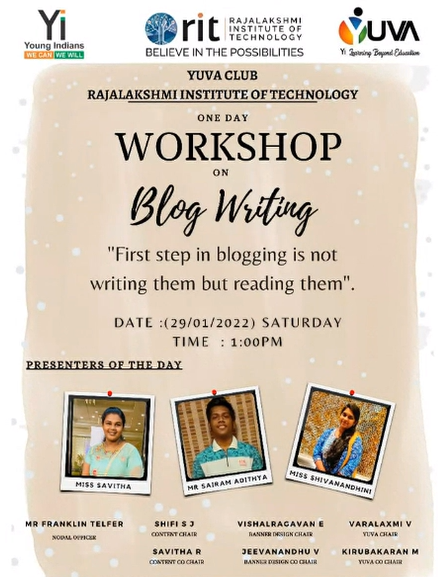
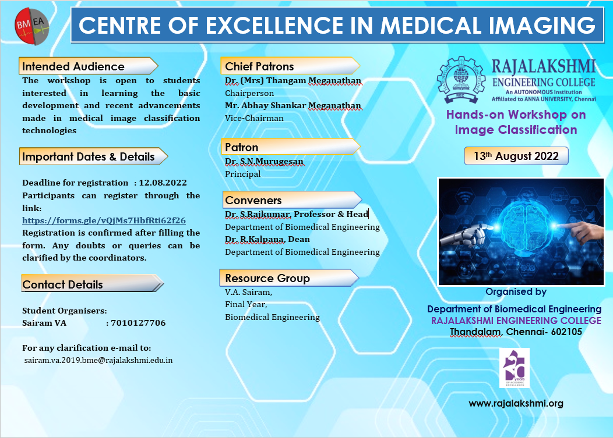
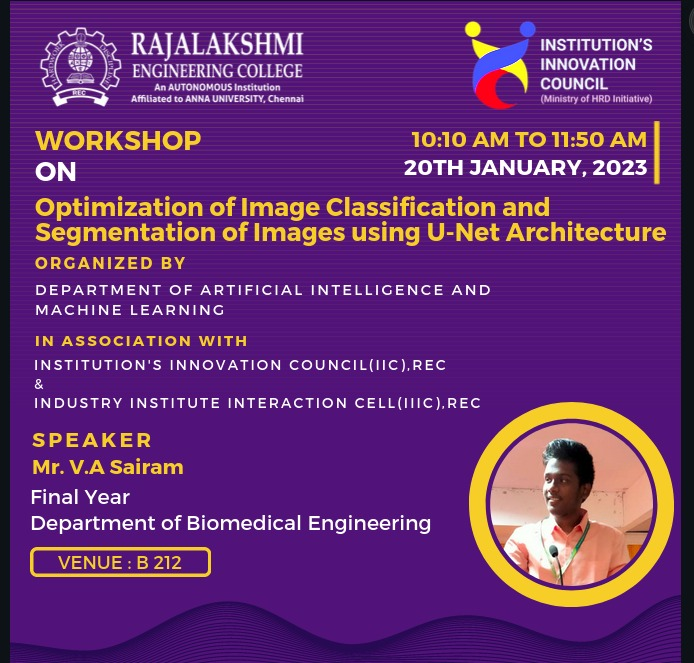
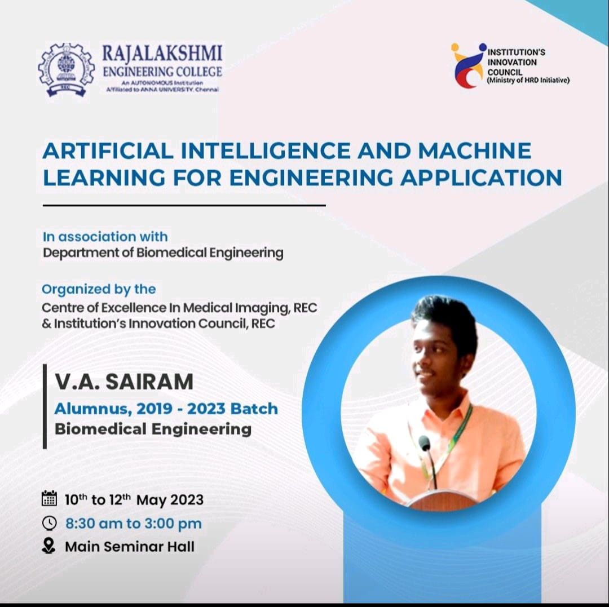
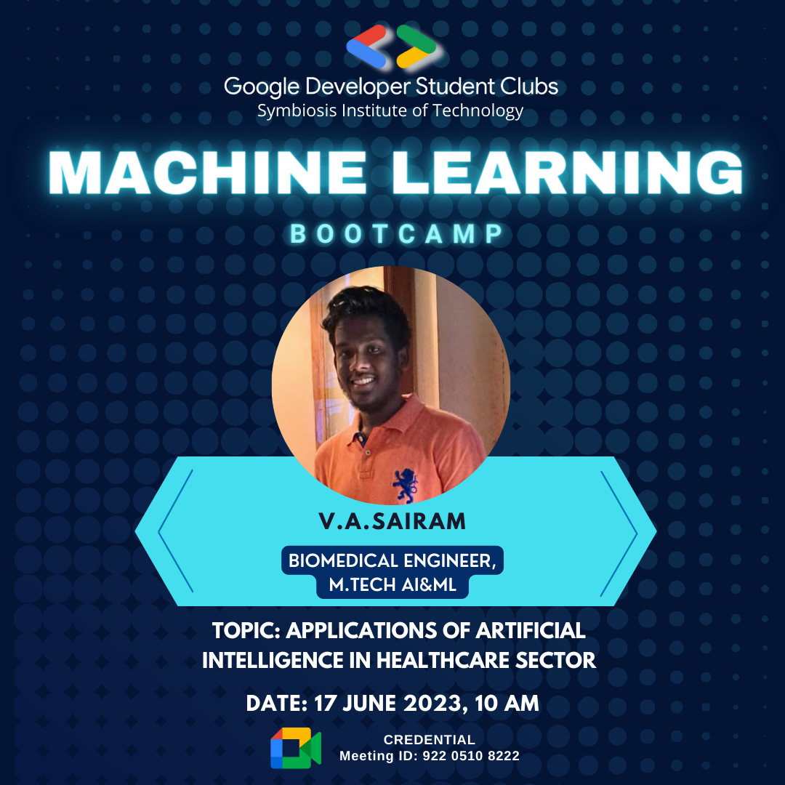

I regularly speak at colleges, tech communities, and industry events on applied AI, career guidance, and business automation.
Invite Me to Speak →My sessions aren't slide-heavy lectures — they're hands-on, practical, and grounded in real production experience. I build these AI systems at work every day across healthcare startups and business automation clients. Participants walk away with working knowledge, not just theory.
Expertise
Making AI accessible for non-technical audiences. Ideal for: MBA students, management faculty, business leaders. Format: 1-2 hour interactive talk. Participants learn what AI actually is, what it can and can't do, and how to evaluate AI opportunities in their field.
How to break into AI from any background — and how to climb once you're in. Ideal for: engineering students, career changers, early professionals. I share my own path from biomedical engineering to ML engineer at a US startup with 16+ publications by 24.
How AI is transforming diagnostics, imaging, and clinical decision support — from research to production. Ideal for: medical students, biomedical engineers, healthtech professionals. Draws from my daily work deploying models across hospital sites.
Object detection, segmentation, and classification for clinical and industrial applications. Ideal for: CS/AI students, researchers. Format: 4-8 hour hands-on workshop with code. Covers YOLO, U-Net, and transfer learning.
Using multimodal AI (sensor data + images) for equipment health monitoring. Ideal for: engineering students, manufacturing professionals. Based on my patented framework for water pump RUL prediction.
A practical framework for identifying where AI creates real ROI in your operations. Ideal for: business owners, startup founders, operations teams. Format: 1-3 hour workshop. Covers workflow analysis, automation opportunity mapping, and build-vs-buy decisions.
End-to-end workflow automation using n8n, agentic frameworks, and intelligent pipelines. Ideal for: technical teams, IT managers, entrepreneurs. Format: half-day hands-on workshop. Participants build a working automation pipeline by the end.
Practical techniques for getting production-quality output from LLMs and Vision-Language Models. Ideal for: developers, researchers, AI practitioners. Based on my experience running 50+ prompt experiments on clinical data at CurieDx.
Workshops
Conducted 26+ hours of structured hands-on workshops:
Sairam has been an exceptional student and researcher. His deep knowledge in AI and medical imaging, combined with his ability to communicate complex topics clearly, makes him an outstanding workshop facilitator and academic speaker.
— Dr A.N.Nithyaa, Associate Professor, Dept. of Biomedical Engineering, REC
Events








Whether it's a 1-hour talk, a full-day workshop, or a multi-day training — I tailor every session to your audience.
Let's Talk →